Civic · Milton, Washington
9/11 Memorial Plaza
A 36-foot column of World Trade Center steel on a new plaza in Triangle Park, designed for three cities and a community of volunteers. Dedicated September 11, 2021. Visit the memorial's site.
Bellevue, Washington · Established 1992
Creative Comfort is Vernon's residential design practice: custom homes, remodels, additions and ADUs, taken from the first sketch through a permit-ready set and on through construction.
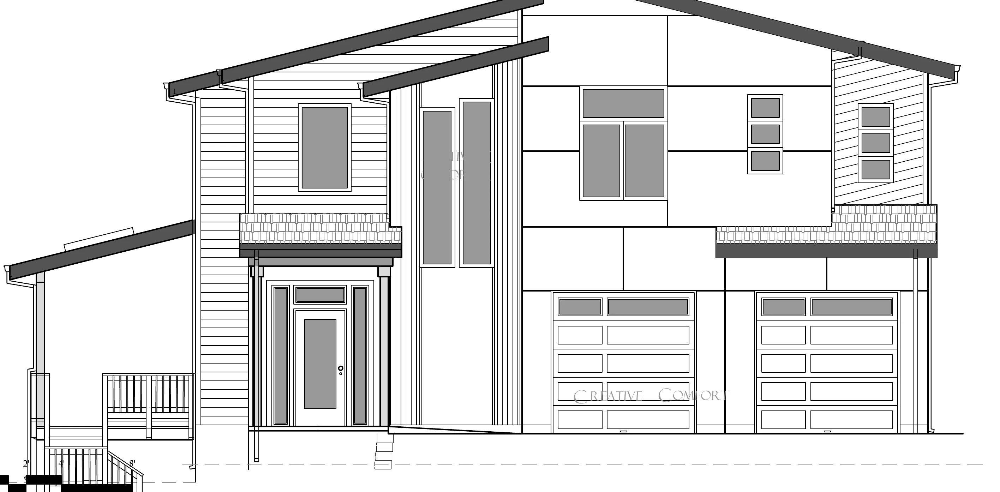
Selected work
Civic · Milton, Washington
A 36-foot column of World Trade Center steel on a new plaza in Triangle Park, designed for three cities and a community of volunteers. Dedicated September 11, 2021. Visit the memorial's site.
New construction · Edmonds
Modern two-storey home for Kelli Homes: shed roofs, exposed beams, Hardie lap and vertical cedar, standing-seam metal roof. Permit set released March 2024.
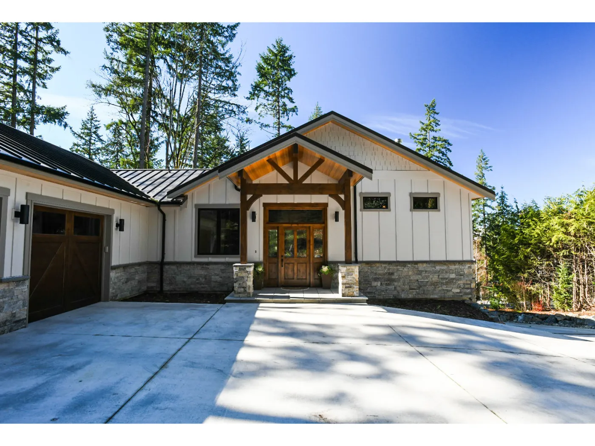
New construction · Issaquah
Stone, timber and a steel roof on a wooded lot, with a vaulted great room under exposed trusses.
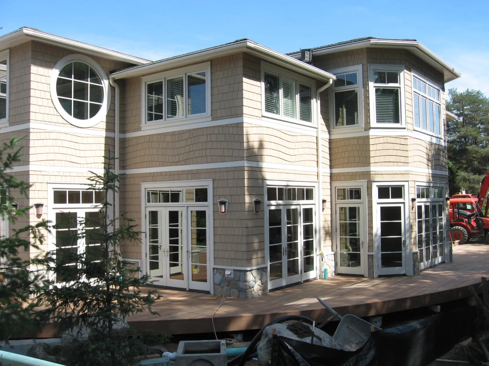
New construction · Bellevue
Three storeys among the evergreens, with a tower bay and a round window on the front.
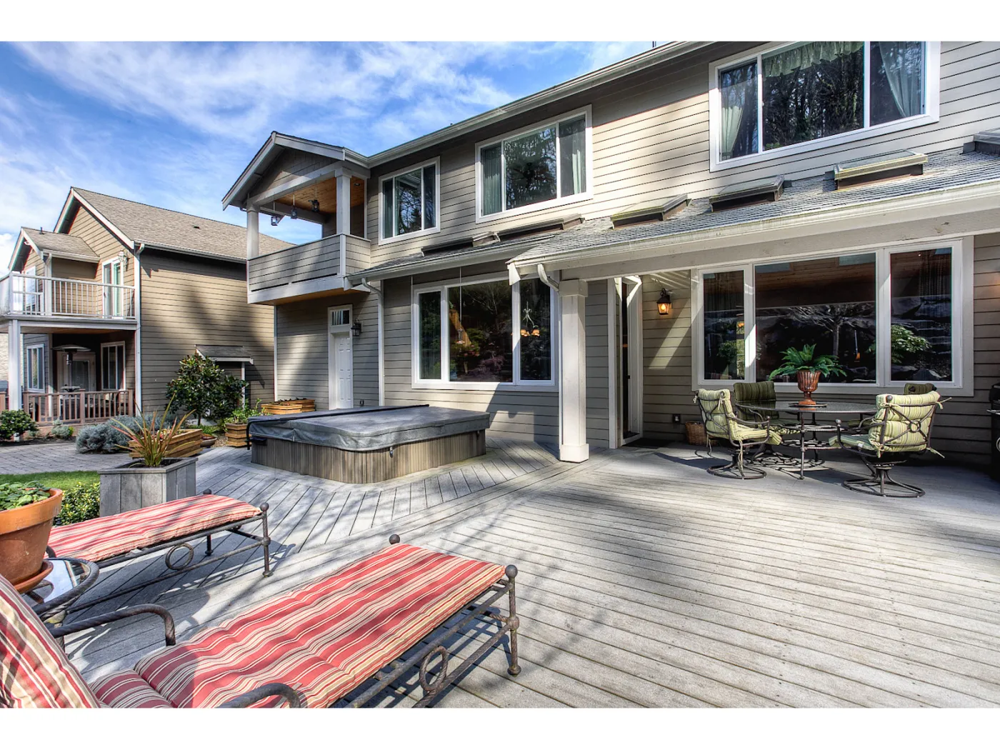
New construction · Kent
Two storeys over a wide back deck with a hot tub, and a covered patio off the lower floor.
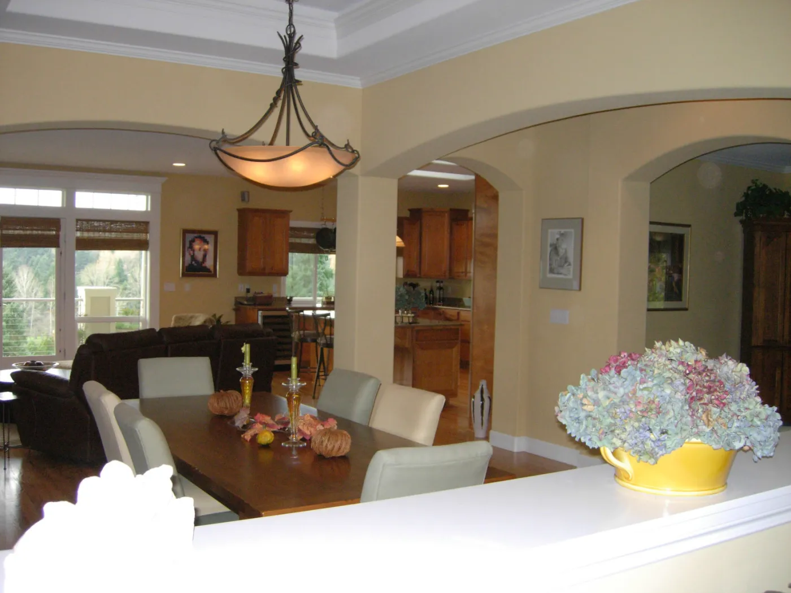
Remodel
A whole-house traditional remodel: new kitchen, dining room, baths and a living room around the fireplace.
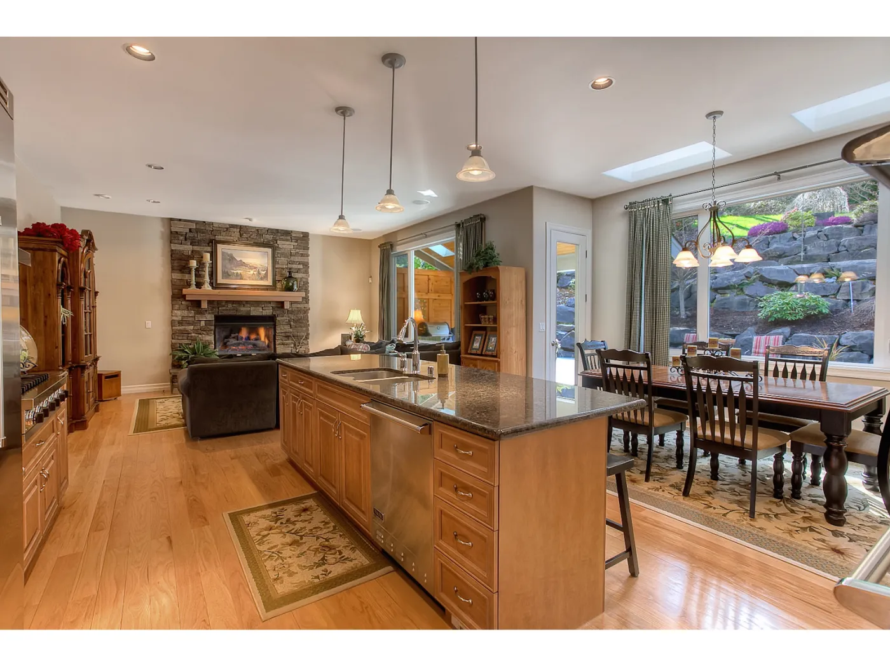
Remodel · Seattle
A long island with seating, maple cabinetry, and the dining nook opened to the kitchen.
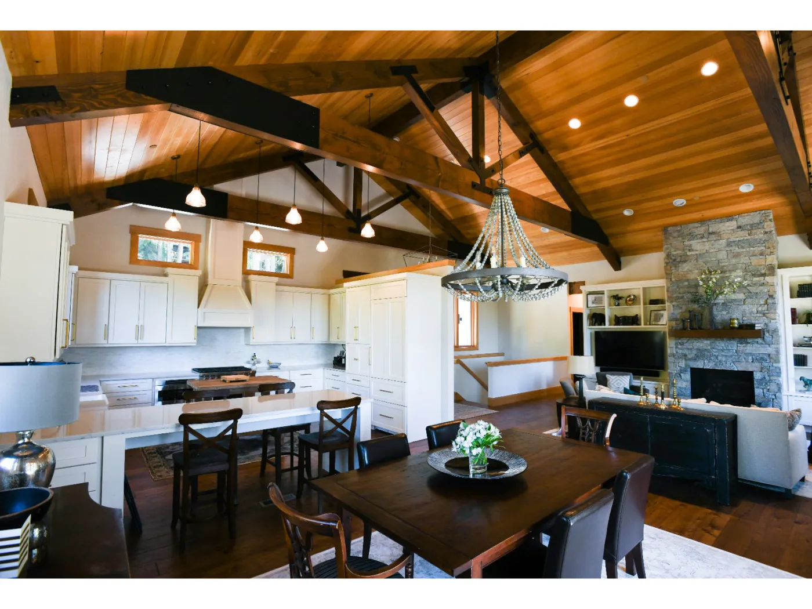
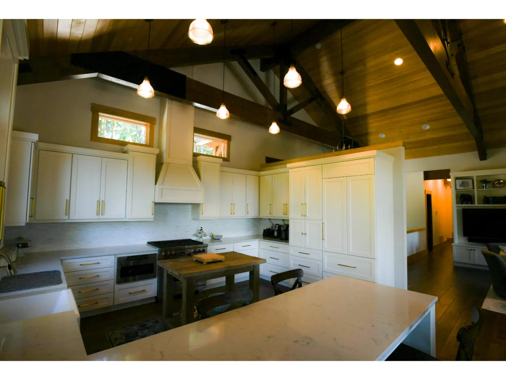
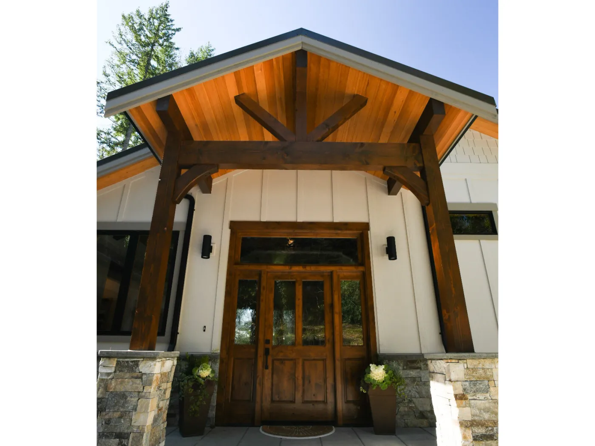
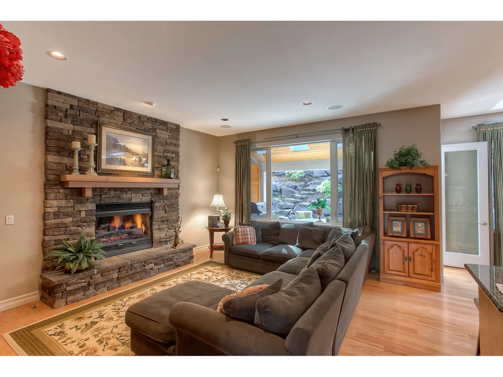
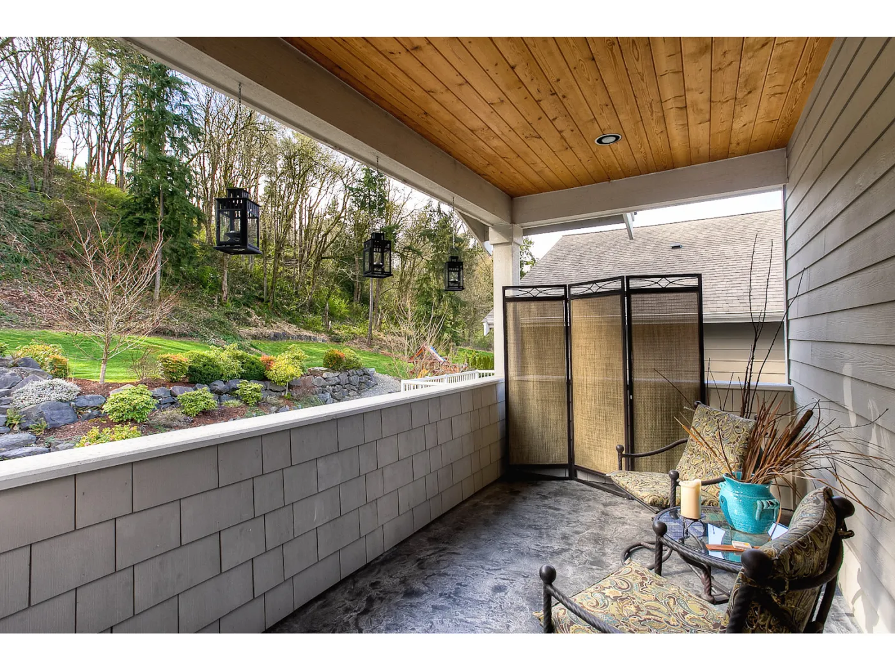
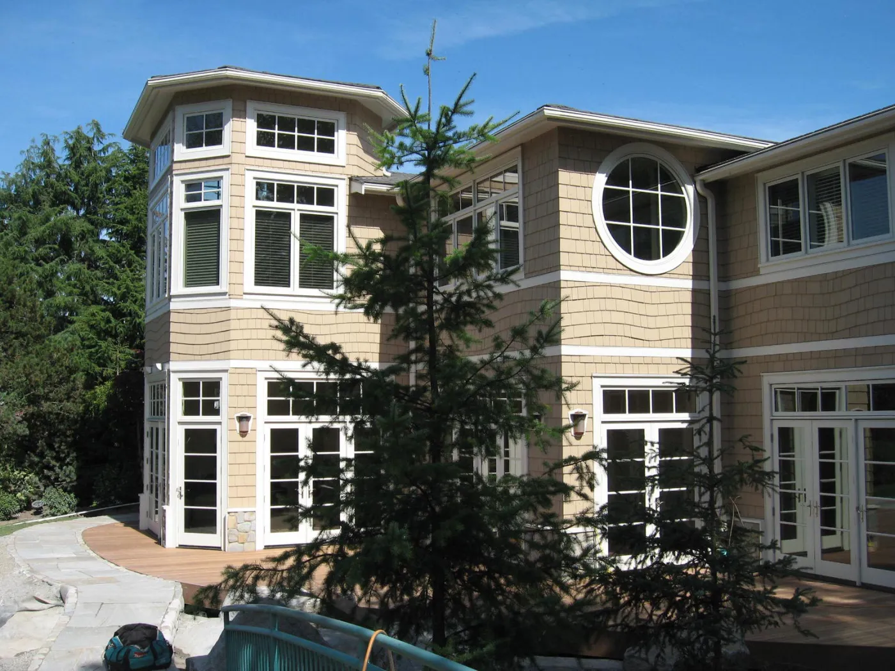
Services
Site planning, floor plans, elevations and a full permit-ready set, with the structural engineer coordinated.
Kitchens, second storeys, extensions and whole-house remodels that respect what's already there.
Detached and attached units designed to the local code, from feasibility through permit.
Homes planned for aging in place and for wheelchair access, without looking clinical.
Envelope, orientation and systems considered from the start, not bolted on.
Questions from the field answered while the house is being built, so the drawings get built as drawn.
How it works
A conversation about the site, the budget and how you live. You leave knowing whether the idea is buildable and roughly what it takes.
Preliminary plans and elevations you can react to. Revisions until the house is yours.
Architectural and framing drawings, specifications and details, coordinated with engineering and ready for the building department.
Site questions answered during construction. Changes are approved in writing, so the house that gets built is the one that was drawn.
About
Building designer, Bellevue, since 1992. Member of the American Institute of Building Design.
Every set that leaves the office carries the same note: if a question comes up in the field, ask before proceeding. That is the whole practice in a sentence. The drawings are made to be built from, and the designer stays reachable until the house is done.
Contact
A call or an email is the start. Bring the lot, a sketch, a listing, or just the idea.
Creative Comfort
1611 116th Avenue NE, Suite 224
Bellevue, WA 98004
Serving Seattle and the Eastside.